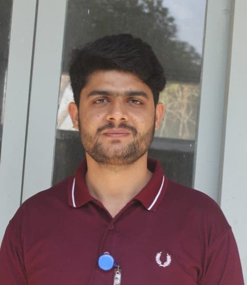

Postharvest Scientist & Plant Physiologist | ACIAR Project Researcher | Cold-Chain Optimization & Quarantine Systems

A dedicated and results-oriented horticulturist holding an M.Sc. (Hons.) in Horticulture (CGPA 3.52/4.00) from the University of Agriculture, Faisalabad — Pakistan's premier institution for agricultural sciences. Academic training encompasses the full scope of horticultural science, from orchard establishment, fruit and vegetable crop production, and integrated pest management to advanced postharvest technology, sustainable agriculture systems, integrated fruit production pipelines, and cold-chain logistics.
Contributed over two years of rigorous field and laboratory research through the internationally funded ACIAR Project (HORT/2020/129), investigating postharvest quality parameters, low-temperature quarantine treatments, and cold-chain optimisation for Kinnow mandarin — a commodity of critical export significance in Punjab's citrus value chain.
Currently serving as a CM-Agriculture Graduate Intern with the Department of Agriculture (Extension), Government of Punjab, where responsibilities encompass field-level monitoring, farmer engagement, and dissemination of evidence-based agronomic recommendations — bridging the gap between scientific research and grower practice. Concurrently advancing the discipline through peer-reviewed publications and national conference contributions.
The M.Sc. Horticulture curriculum at UAF provided a rigorous grounding across six major horticultural disciplines, building an integrated command of field production, postharvest science, and sustainable crop management systems.
Advanced technical competencies spanning postharvest physiology, cold-chain optimization, quarantine compliance systems, experimental design, statistical analytics, and sustainable horticultural value-chain research.
Thesis: "Effect of Fruit Size and Harvest Time on Storage Life and Quality of Kinnow Fruit"
Peer-reviewed journals, international conference abstracts, and proceedings. Click a filter to sort by type.
Available for research collaborations, agronomic consultancy, extension partnerships, international agricultural development projects, and academic or field-based opportunities in horticulture and postharvest science.
Complete curriculum vitae with publication list, research experience, and certifications